Three rounds of work on this Mac: saving the October work, an overnight audit and rebuild, and a second rebuild that makes the app follow your approved prototype. Nothing on the live server or in the App Store was changed.
kuro/overnight-2026-11-01 and kuro/prototype-fidelity.~/Kuro-backups/.All October work existed only on this Mac (about 1,900 unsaved files). I made a full backup, then saved it as five tidy commits. Three automatic checks were failing and are fixed. About 20 places that could crash on missing data now fail safely.
Eight parallel reviews read the whole app and server: every network call, every way data comes in, all 140 live tables, the external data sources and their terms, every screen, sign-in, and the design rules.
New release-date and song system (prepared), database speed fixes (prepared), faster app data loading, the new lists ("Folio"), Profile, Discover, Clubs, sign-in and onboarding redesigned, security fixes. Reviewed from five angles; 15 confirmed problems fixed.
Side-by-side comparison showed the app didn't match your approved prototype. New plan: the prototype wins, warm tints back, colours taken from each title's artwork, every screen and state branded.
Captured every prototype screen as a reference, rebuilt Home, both title pages, first-time screens and Taste, restyled the rest. A strict reviewer compared every screen to the prototype twice; every difference was fixed or explained.
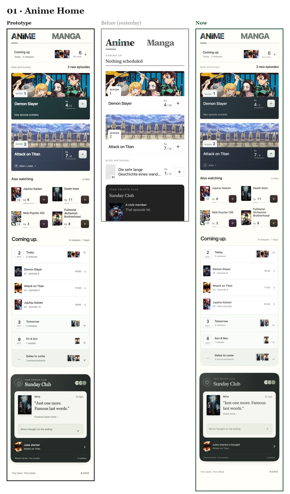
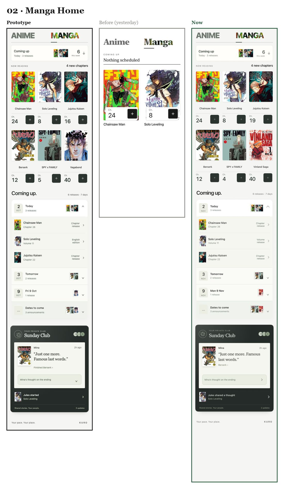
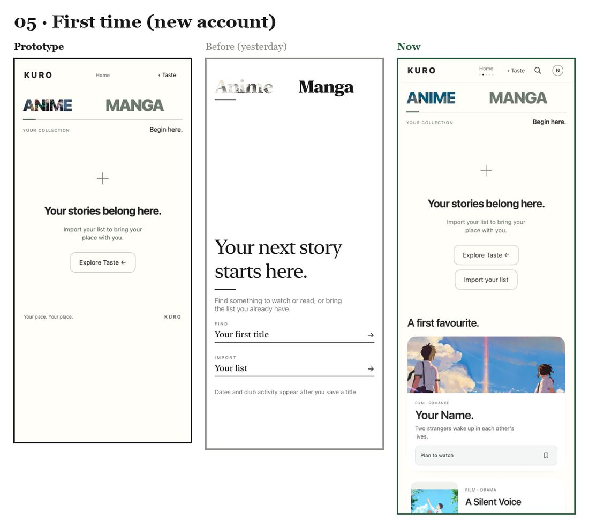
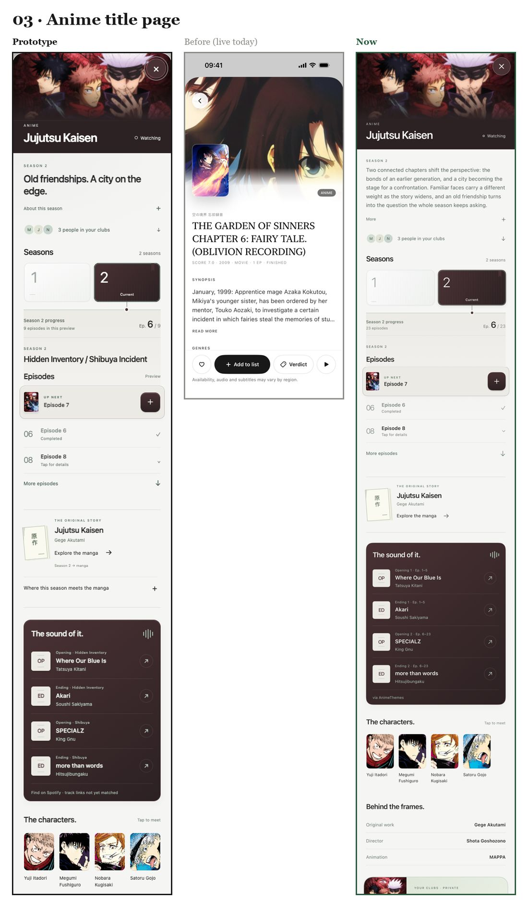
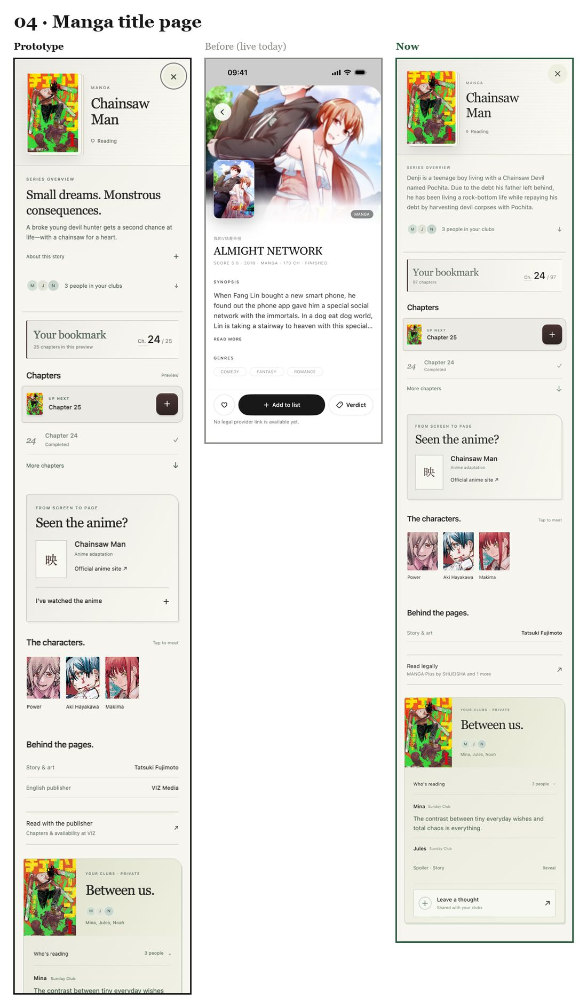
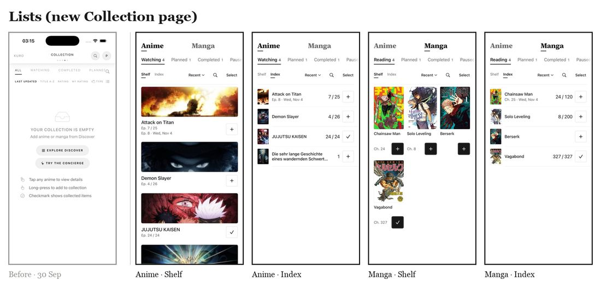
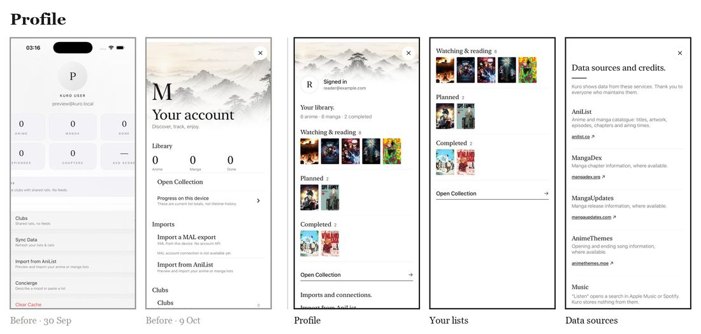
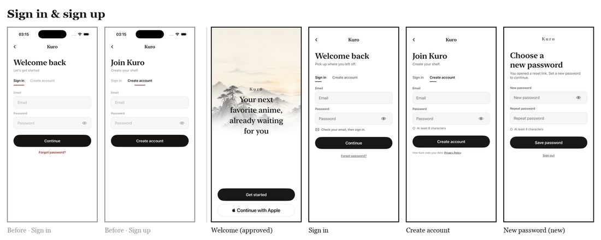
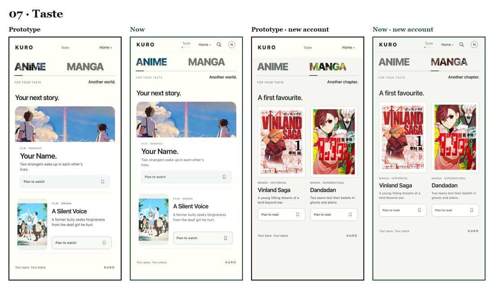
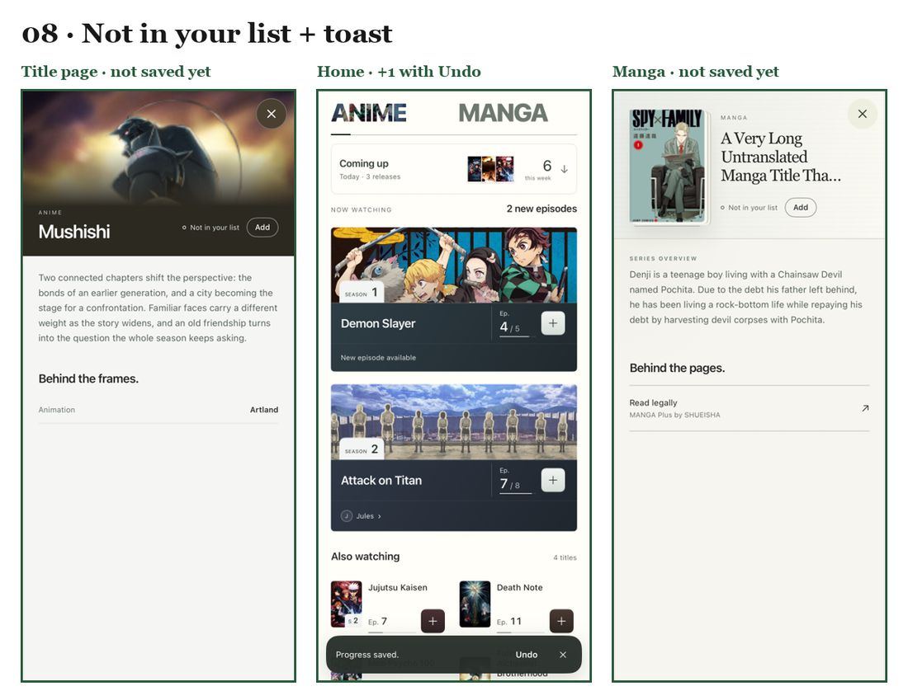
Background jobs that pull anime and manga information from outside sources into our database, which the app then reads.
| Intake | Problem found | What changed | Status |
|---|---|---|---|
| Catalog import | The “airing” and “recent” jobs re-walked the whole catalog by popularity, so next-episode times could be days stale. | Each job now asks for what it's for (airing, updated, new titles). | Prepared |
| Catalog import | An AniList error reset the job to page 1; no respect for AniList's rate limit (30/min). | Errors stop cleanly; a 25/min limiter honours “retry after”. | Prepared |
| Catalog import | Overwrote our own mirrored images and synopsis work; some link tables silently never updated. | Those fields are preserved; link tables update correctly. | Prepared |
| Release dates | Nothing filled next chapter or volume dates; manga “next chapter” was always empty. | New release-intake job: AniList airing schedule (confirmed), MangaUpdates official releases (estimates only when reliable). | Prepared, off |
| Songs | Song table existed but was empty; the worker used a retired API. | Worker moved to the current AnimeThemes API; still manual only. | Needs licence decision |
| Chapters | MangaDex volume grouping was thrown away; 622,698 chapter rows are mostly placeholders. | Volume grouping kept; placeholder chapters hidden in the app. | Prepared |
| Where | Before | Now | Status |
|---|---|---|---|
| Every +1 / save | Your own save echoed back and triggered a full reload: about 4–10 extra requests each time. | Your own echoes are ignored; other devices' changes still update. | Built |
| Discover | Loaded twice per launch and recorded views twice. | Once per launch. | Built |
| Title pages | Availability checked 3×; watch links re-fetched on every progress change; one request per missing title. | Checked once, cached for 10 minutes, batched. | Built |
| Catalog reads | Asked for every column, including internal moderation fields. | Asks only for what the screen shows. | Built |
| Sign-in | Read the whole library twice. | Once. | Built |
| Clubs | Re-fetched on every tab visit. | Re-fetched only when older than a minute. | Built |
| Images | Thumbnails decoded at full size, filling memory. | Decoded at the size shown. | Built |
| Feature flags | A missing server table switched the new Home off in the middle of launch. | Ignored safely. | Built |
| New data | — | Release dates and songs: the app uses the new server functions when they exist and quietly falls back today. | Waits for deploy |
supabase/prepared-migrations/20261101*. None applied to the live database.docs/overnight-2026-11-01/DEPLOY_CHECKLIST.md.| Issue | What could happen | Status |
|---|---|---|
| Sign-in links | While signed out, any link could sign your phone into someone else's account. Now only links this phone asked for are accepted. | Fixed |
| Password reset | A reset link just signed you in; you never set a new password. Now there's a real “choose a new password” screen. | Fixed |
| “Email taken” check | Anyone could test which emails have accounts. The app no longer does this; the server lock is prepared. | Fixed in app |
| Recent searches | Stayed on the phone after deleting the account. Now removed. | Fixed |
| Planned + 1 | Adding progress to a Planned title left it Planned. Now it starts it; Undo puts it back. | Fixed |
| Remove | Deleted a title in one tap. Now asks first and offers Undo. | Fixed |
| Release build | A test-only change broke App Store builds; a reviewer caught it before it shipped. | Fixed |
| Parse rate limit | A public function trusts a header callers can fake, so its rate limit can be dodged. | Needs deploy |
kuro.app doesn't load. Apple can reject the app for this. Your actionhiggsfield entry without a command). Your configBeing free doesn't automatically make Kuro non-commercial. Ads, affiliate or referral links, a paid tier, or a company running the app all count. And for AniList, money isn't the issue at all.
| Source | What its terms say | For Kuro today (free, no ads) |
|---|---|---|
| AniList | Bans mass collection and storage of its data, and use inside other anime/manga list or tracker apps, whether or not you make money. Commercial use is free under $150/month revenue. | Problem either way Kuro is a tracker built on a full AniList copy. Needs written permission from AniList. |
| MangaDex | No ads or paid services in the app; credit required. | OK while free and ad-free with credit (now in Profile → Data sources). |
| AnimeThemes | No use in any revenue-generating project without their approval. | OK while free Ask them before any ads, referrals or paid tier. |
| MangaUpdates | Allowed with credit and polite request spacing. | OK |
| MyAnimeList | Needs their API agreement; no scraping. | Agreement needed for the MAL connection. |
Kuro's research notes plan book referrals and publisher-funded samples later. Those would count as commercial and change the MangaDex and AnimeThemes answers.
Back up both branches and open a pull request to main.
Email AniList for permission; decide on ads/referrals before using AnimeThemes and MangaDex.
Get kuro.app (or another address) serving a privacy policy and terms.
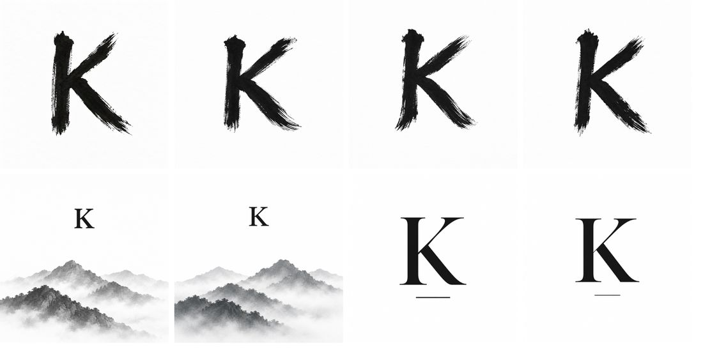
Apply the prepared database changes and data jobs step by step, with you.
A TestFlight build for you and a few testers, then a gradual rollout of the new Home.